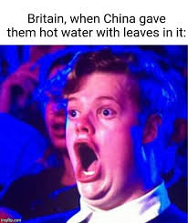

Tea Recipe

NOw you want to make some ENGLISH tea. That stereotype is in fact not true as most people in the UK actually prefer coffee. Source:Me
The following is a comprehensive scientific in depth description of how to make a proppa cuppa tea!!!
Ingredients
- Hot water can be obtained by boiling water over a fire in your garden, might be dangerous bring matches
- Milk from a cow
- Spoon for stirring it
- sugar if your feeling fancy
- leaves if your even fancier idk why people be putting leaves in tea bruh
Instructions
- Heat the water over a fire to boiling point, use thermometer to measure this
- Pour milk from cow into the water so its like 8/10ths full
- stir with spoon for fragrance
- put sugar in if you want
- PUt leaves in if your feeling dangerous
- Job well done!!
Go back to index